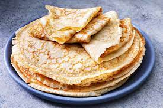

Crepes

Description
Crepes have been an easy go-to snack and meal for my family for as long as I can remember. The ease with which they can be made, partnered with ability to be filled with almost anything makes them a great treat for almost anytime!
Ingredients
- Large Skillet
- 1 cup all-purpose flour
- 2 large eggs
- 1/2 cup milk
- 1/2 cup water
- 1/4 tsp salt
- 1 tsp vanilla
- 2 tbsp butter, melted
Steps
- Combine all wet ingredients in a medium mixing bowl.
- Sift flour in to wet ingredient mixture.
- Add salt to mixture, stirring thoroughly.
- Lightly oil skillet and heat over medium heat. Ensure pan is fully preheated before beginning cooking.
- Using approximately 1/4 cup (more or less may be necessary depending on the size of your skillet) quickly pour batter into skillet, tilting skillet to ensure full coverage.
- Return skillet to heat, allow to cook until top of crepe no longer looks wet, approximately 30 seconds
- Flip crepe, cook for another 15 seconds
- Remove crepe from pan
- For best results, serve immediately with your choice of filling!